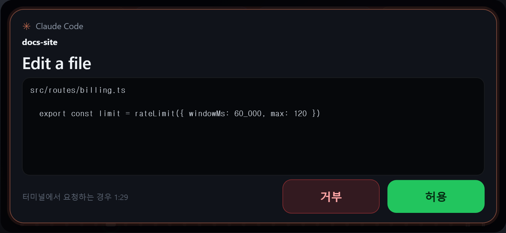
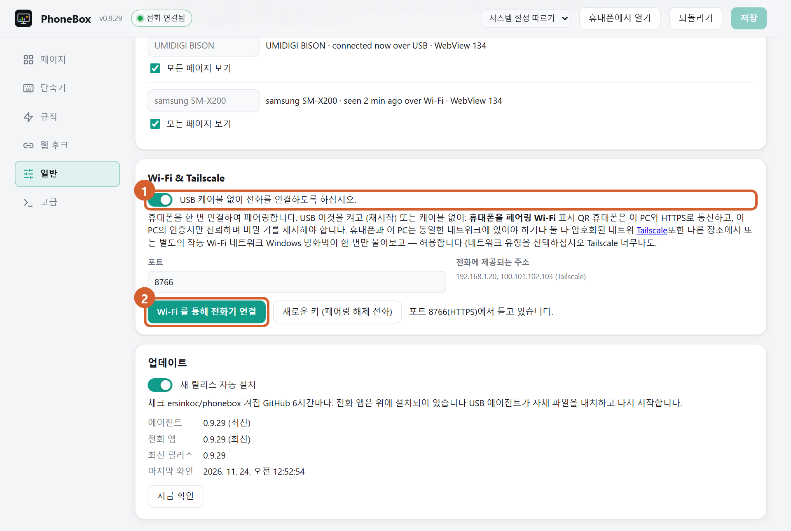
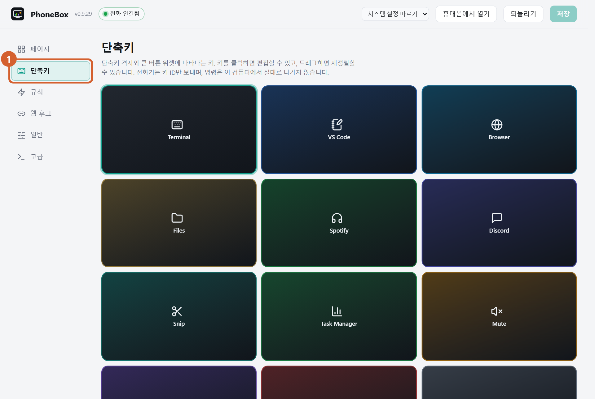
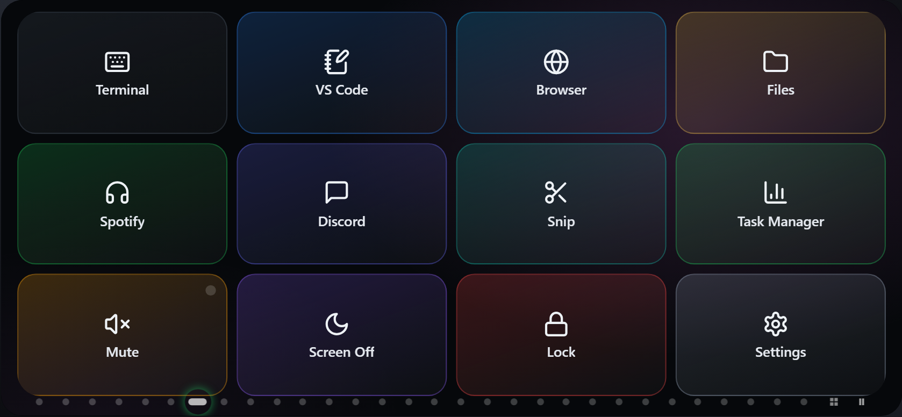
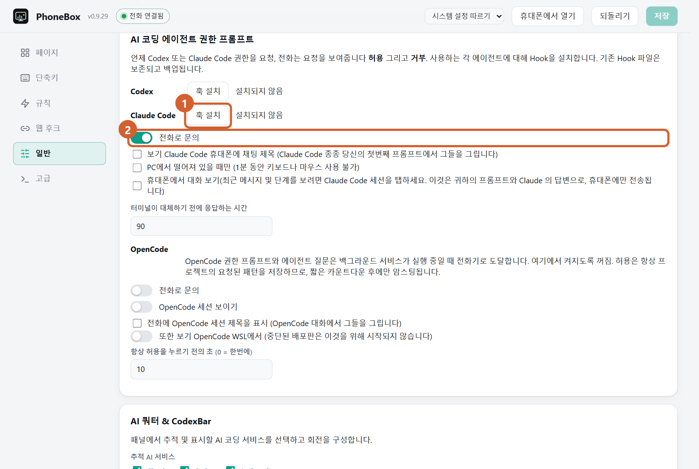
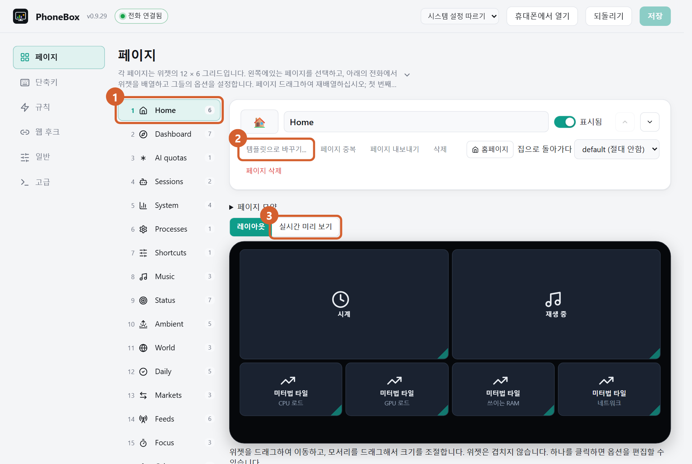
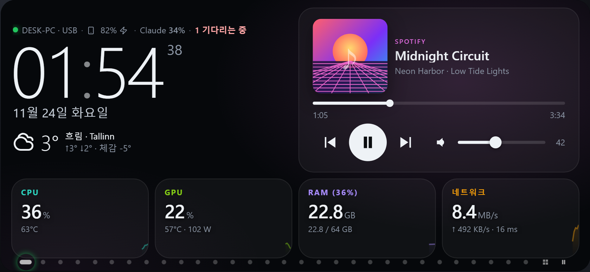
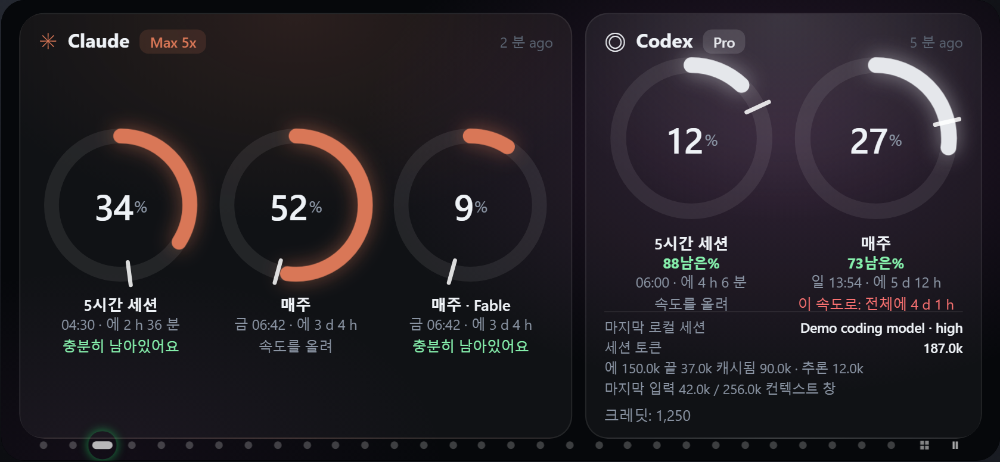

PhoneBox는 안드로이드 폰을 내 컴퓨터 전용 리모컨·위젯판으로 바꿔 주는 무료 오픈소스(MIT)예요. 컴퓨터(윈도·맥·리눅스)에 작은 프로그램, 폰에 앱을 깔고 이으면 폰 버튼으로 프로그램 열기·화면 잠그기·소리 조절을 하고, 클로드 코드가 허락을 물으면 폰에서 허용·거부를 눌러요. 같은 와이파이면 바로, 밖에서는 무료 연결 앱 Tailscale로 이어요. 이 정리는 공식 설치 문서 기준이고, 화면은 공식 라이브 데모(데모 데이터)예요.

윈도는 PowerShell을 열고 irm https://raw.githubusercontent.com/ersinkoc/phonebox/main/setup.ps1 | iex 한 줄, 맥·리눅스는 터미널에 curl -fsSL https://raw.githubusercontent.com/ersinkoc/phonebox/main/setup.sh | bash 한 줄이에요. 다 깔리면 설정 화면(127.0.0.1:8765)이 브라우저로 열려요. 윈도는 아직 서명 전이라 스마트스크린 경고가 뜰 수 있어요(공식 안내).
케이블로 이으면: 폰 개발자 옵션에서 USB 디버깅을 켜고 꽂으면 설정 프로그램이 앱까지 깔아 줘요. 케이블 없이: 설정 › 일반 › Wi-Fi & Tailscale에서 'USB 케이블 없이 전화를 연결'을 켜고 저장 → 다시 시작(1), 'Wi-Fi를 통해 전화기 연결'을 눌러(2) 나온 QR을 폰 카메라로 찍어요. 앱은 스토어에 없고 깃허브 릴리스(APK)에서만 받아요.

폰과 컴퓨터가 다른 네트워크(카페·회사 등)에 있으면 둘 다 Tailscale을 깔고 같은 계정으로 로그인해요. PhoneBox가 Tailscale 주소도 같이 알려 줘서, 폰이 집 와이파이 밖에서도 컴퓨터를 찾아요(공식 SETUP 문서).
설정 › 단축키(1)에서 프로그램·폴더·키 조합·매크로를 버튼으로 만들고, 페이지에 버튼판(Shortcuts·Deck 템플릿)을 넣어요. 폰 화면을 한 번 누르면 컴퓨터에서 그 일이 돼요.


설정 › 일반 › AI 코딩 에이전트 권한 프롬프트에서 Claude Code '훅 설치'를 누르고(1) '전화로 문의'를 켜요(2). 클로드 코드가 명령 실행·파일 수정을 물으면 폰에 허용·거부가 떠요. 'PC에서 떨어져 있을 때만' 칸을 켜면 자리에 있을 땐 컴퓨터에서, 자리를 비우면 폰에서 물어요.

설정 › 페이지에서 페이지를 고르고(1) '템플릿으로 바꾸기'로 홈·AI 한도·시스템 등 30가지 틀 중 하나를 골라요(2). 위젯 131개 중에서 끌어다 놓고 크기를 바꾸고, '실시간 미리 보기'로 확인한 뒤 저장해요(3). 폰에선 옆으로 넘기거나 볼륨 키로 페이지를 넘겨요.



페이지에 Trackpad 위젯을 넣고, 그 위젯 설정에서 '폰으로 마우스 조종 허용'을 켜요(안전 때문에 기본은 꺼짐). 문지르면 커서, 톡 치면 클릭, 두 손가락이면 스크롤이에요. 폰에 컴퓨터 화면이 보이는 건 아니라서 책상 앞에서 쓰기 좋아요(공식 GUIDE 문서).
PowerShell에 붙여 넣기
irm https://raw.githubusercontent.com/ersinkoc/phonebox/main/setup.ps1 | iex
터미널에 붙여 넣기(내 계정으로)
curl -fsSL https://raw.githubusercontent.com/ersinkoc/phonebox/main/setup.sh | bash
컴퓨터 브라우저에서(윈도는 트레이 아이콘 더블클릭도 됨)
http://127.0.0.1:8765
케이블 없이 쓸 때 폰에서
https://github.com/ersinkoc/phonebox/releases/latest
공식 라이브 데모 — 데모 데이터로 눌러 봄
https://ersinkoc.github.io/phonebox/
도움이 되셨다면
@ai.antenna.kr
에서 바로 쓰는 AI 활용법을 계속 올립니다.